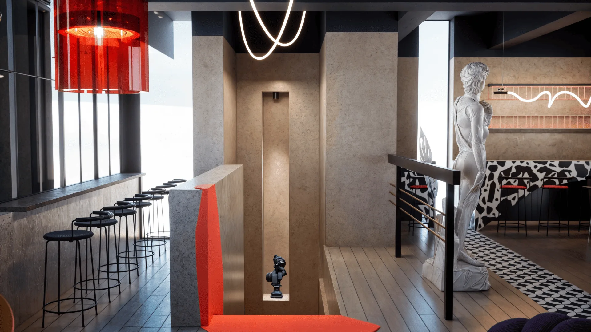
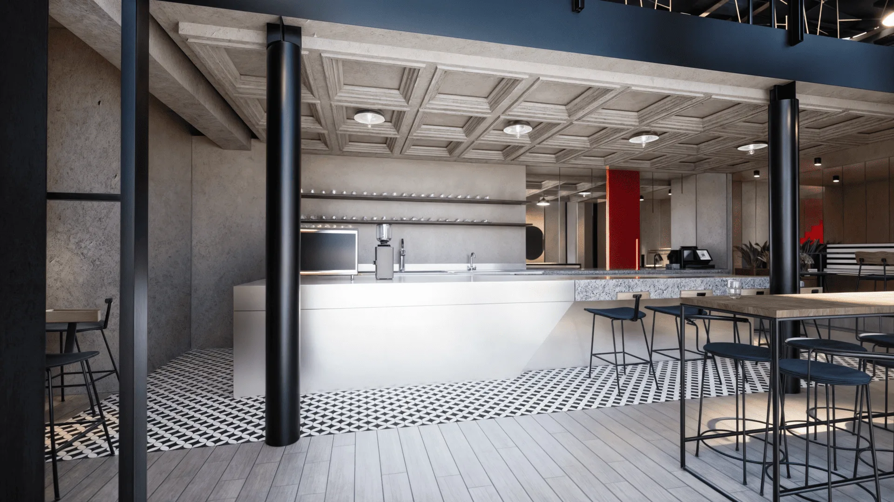
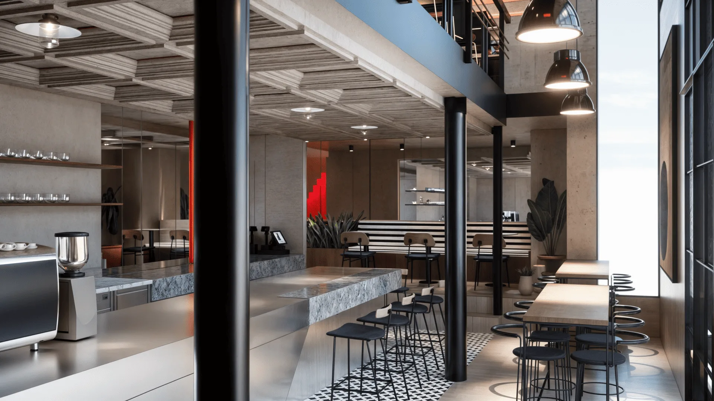
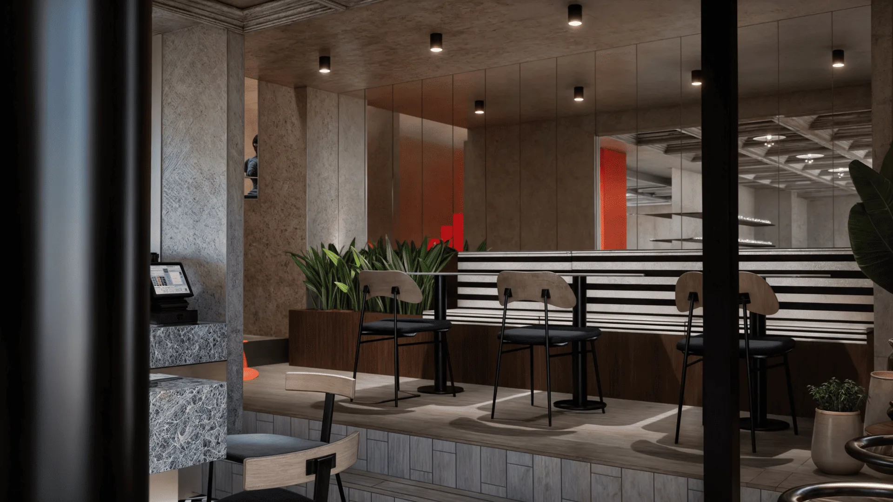
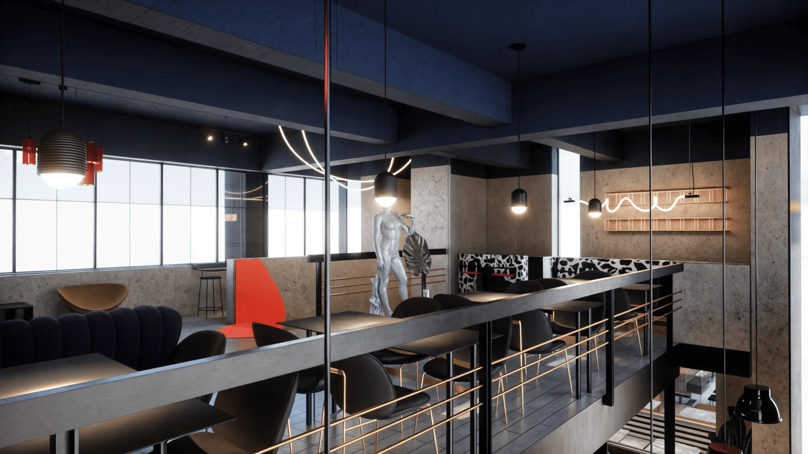
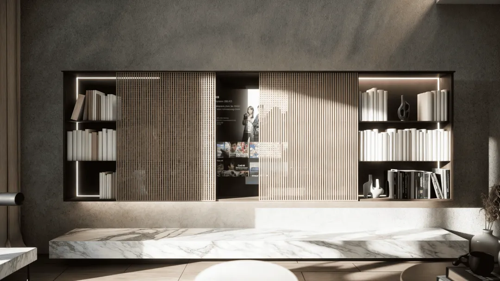

Caffe Spass, Belgrade
Belgrade, Serbia, 2024
Caffe Spass occupies a double-height space on Kralja Petra Street in Belgrade. We kept the raw structure of steel columns, exposed concrete and coffered ceiling, and set against it a bold palette of red, black and white, with a mezzanine overlooking the main floor.
Patterned tiles, a graphic bar counter, sculptural figures and line lighting make a lively room with a strong identity.







Next projectApartment Sakura 2/24View project
